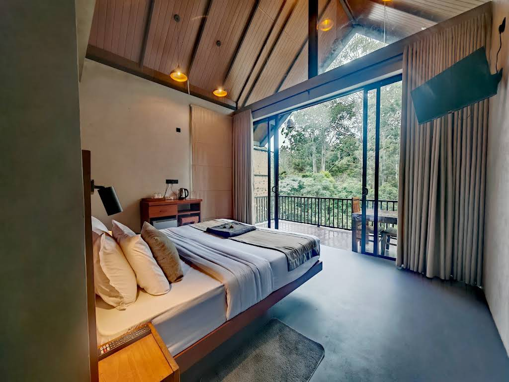
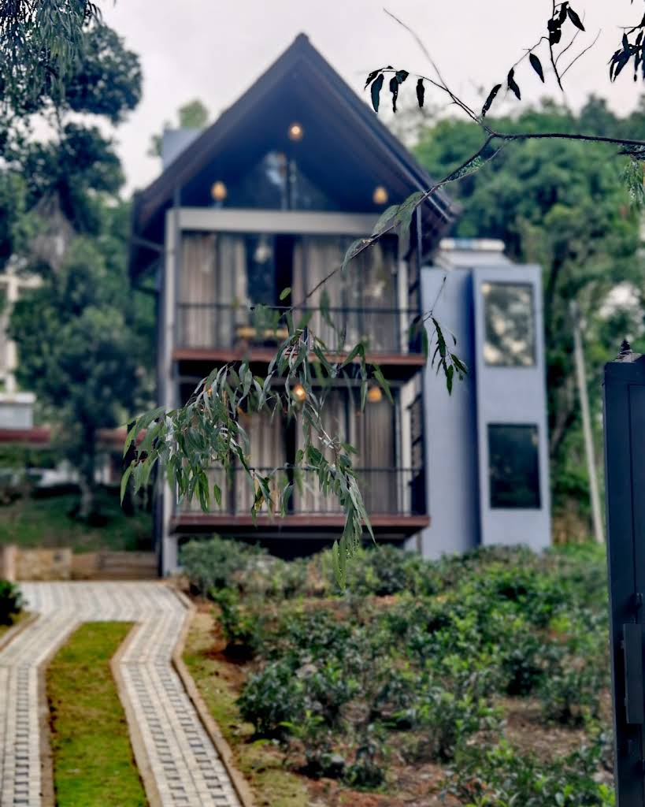
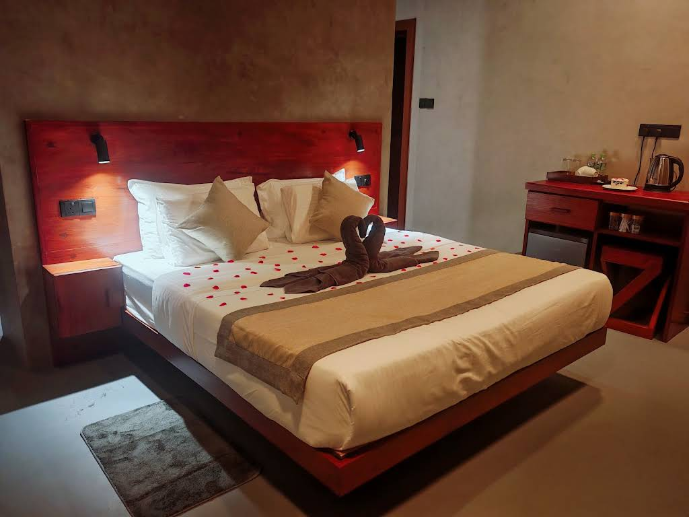

A QUIET CORNER OF ELLA, SRI LANKA
A little closer
to nature.
Leave the rush behind. Settle into warm spaces, green surroundings, and the slower rhythm of Ella.
Discover your escape ↗

Small by design. Personal by nature.WELCOME TO LIORA
Room to breathe.
Space to just be.
Tucked along Kithalella Road, Liora is a small lodge with two forest-facing rooms. Modern comfort meets natural textures, with a balcony to make the most of your time outdoors.
Wake slowly, enjoy breakfast, and head out to discover Ella. Come back to a place that feels easy to call your own.
Make yourself at home ↗REST, BEAUTIFULLY
Your Ella hideaway.
Warm wood. Soft light. A little stillness.
Everything you need to settle in.

Superior King Room
A comfortable king bed, a private bathroom, and a balcony looking out to the greenery.
- King bed
- Private balcony
- Air conditioning
- Free Wi-Fi
- Tea & coffee
- Private bathroom
A CLOSER LOOK
The little details.
A glimpse of life at Liora.
Select a photograph to explore.
THE HILLS ARE CALLING
Find your way
to Ella.
Make Liora your base for exploring the hill country. Put Ella Rock, Nine Arch Bridge, and Ravana Falls on your list, then return for a restful evening.
Kithalella RoadElla 90090, Sri LankaGet directions ↗
YOUR NEXT SLOW MORNING STARTS HERE
Stay a little.
Feel a world away.
Choose your dates to explore availability, or call us to plan your visit.
Continues to Booking.com. Availability and rates are confirmed there.
Prefer to talk? +94 78 748 0098 ↗